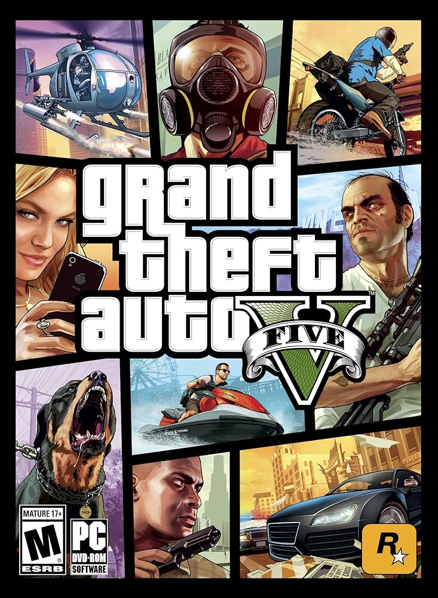
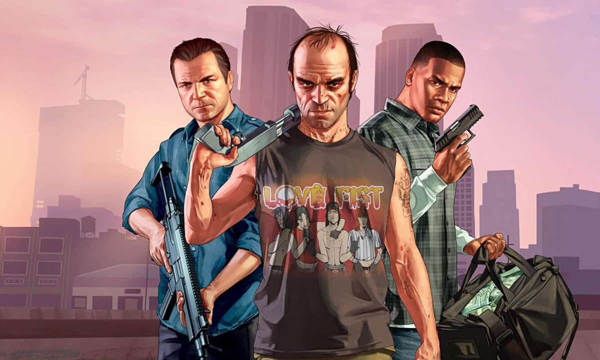
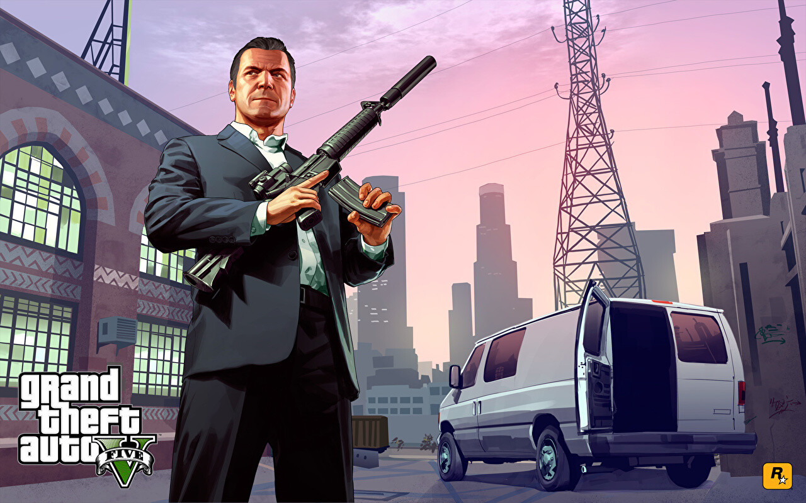

REGRESAR
GRAND THEFT AUTO V



Cuando un joven estafador callejero, un ladrón de bancos retirado y un psicópata aterrador se ven involucrados con lo peor y más desquiciado del mundo criminal, del gobierno de los EE. UU. y de la industria del espectáculo, tendrán que llevar a cabo una serie de peligrosos golpes para sobrevivir en una ciudad implacable en la que no pueden confiar en nadie. Y mucho menos los unos en los otros.
Los jugadores actuales pueden transferir su progreso del modo Historia de GTA V y sus personajes y progresos de GTA Online a PlayStation®5 y Xbox Series X|S mediante una única transferencia.
Grand Theft Auto V (abreviado como GTA V o GTA 5) es un videojuego de acción-aventura de mundo abierto desarrollado por el estudio escocés Rockstar North y distribuido por Rockstar Games. Este título revolucionario hizo su debut el 17 de septiembre de 2013 en las consolas Xbox 360 y PlayStation 3. Posteriormente, experimentó una reaparición el 18 de noviembre de 2014 en las consolas de nueva generación, Xbox One y PlayStation 4, con una perspectiva en primera persona. El juego luego amplió su alcance a Microsoft Windows el 14 de abril de 2015. El capítulo más reciente en su historia confirmó su llegada a Xbox Series X/S y PlayStation 5 en marzo de 2022, alardeando de impresionantes mejoras gráficas, incluido el soporte para una resolución de 8K y fluidos 120 FPS. Marca un hito significativo al ser la primera entrada importante en la serie Grand Theft Auto desde la presentación de Grand Theft Auto IV en 2008, marcando el comienzo de la "era HD" para la franquicia.
Rockstar Games tentó a los fanáticos con los primeros detalles del juego el 25 de octubre de 2011, a través de la red social Twitter. La narrativa vibrante del juego se desarrolla en la ciudad ficticia de Los Santos y sus alrededores, tomando inspiración de Los Ángeles y la región del sur de California. Cabe destacar que Los Santos había servido como escenario para el título anterior, GTA: San Andreas. En un cambio innovador con respecto a sus predecesores, GTA V adopta un enfoque narrativo único al centrarse en tres protagonistas distintos: Michael, Trevor y Franklin, además del personaje personalizable del jugador en el modo en línea. El mundo tuvo su primera visión de Grand Theft Auto V a través de su tráiler de presentación, revelado el 2 de noviembre de 2011.
En el año 2004, Michael Townley, Trevor Philips y Brad Snider eran ladrones de bancos que vivían en Ludendorff, en el estado de North Yankton (basado en Dakota del Norte). Michael, queriendo huir de esa vida, planea un atraco falso junto al agente federal corrupto Dave Norton. Dave tenía que matar a Trevor y arrestar a Brad mientras Michael fingía su muerte, pero todo sale mal porque Dave, en vez de dispararle a Trevor, le dispara a Brad y Trevor escapa. Michael es dado por muerto y es llevado con su familia a Los Santos (San Andreas) con una nueva identidad: «Michael De Santa».